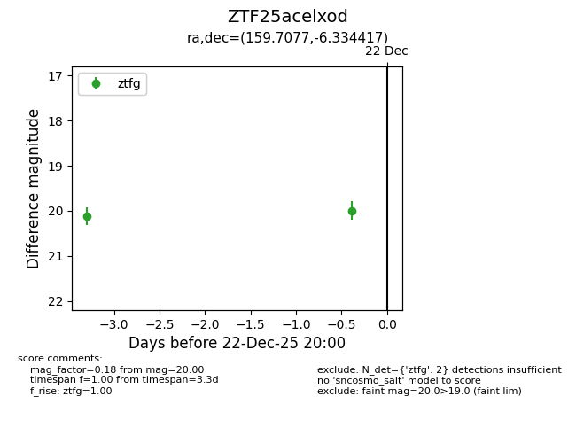
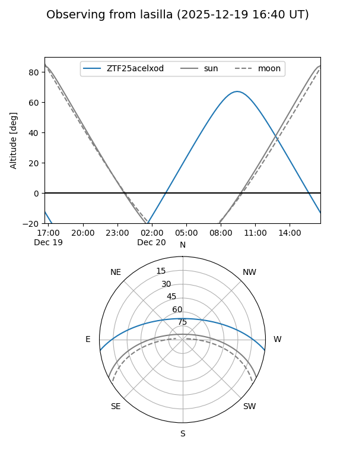
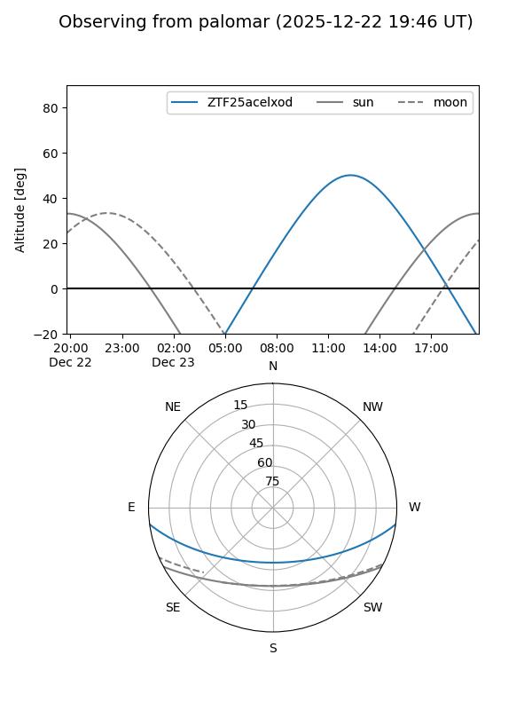

ZTF25acelxod
Target ZTF25acelxod at 2025-12-19 13:12
Aliases and brokers:
FINK: fink-portal.org/ZTF25acelxod
Lasair: lasair-ztf.lsst.ac.uk/objects/ZTF25acelxod
ALeRCE: alerce.online/object/ZTF25acelxod
alt names
ZTF25acelxod (ztf,fink_ztf)
Coordinates:
equatorial (ra, dec) = 159.7077,-6.33442
equatorial (HMS+DMS) = 10:38:49.86,-06:20:03.90
galactic (l, b) = (254.2397,+43.65086)
Flags:
Photometry:
last ztfg=20.12
1 ztfg detections
Lightcurve

Visibility


Additional plots